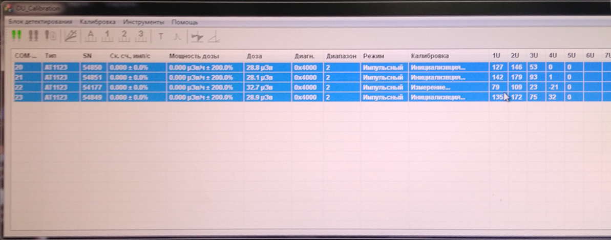

Градуировка ДКС-АТ1123
1
- Установить 4-е дозиметра на УДГ-АТ110 таким образом чтобы они расположились параллельно оси излучения, а
расстояние от источника до центра детектора равнялось -10 мм от края торца колпачока

- Подключить к ПК
- Запустить ПО 1121-1123
- Нажать Поиск
- Выбрать дозиметры
- Выбрать калибровка
- Выбрать точку 1 диапазона (7-700 мк)
- Нажать начать измерения
- Установить источник 137Cs 7 мкЗв/ч
- Градуировать показания выставив коэф 1U (д.б.≈100) с учётом фона 0,1 мкЗв/ч
- Снять показания по Cd 1м Am 1м 60Со 10 мкЗв/ч
- Снять точки 70 и 700 мкЗв/ч
- Данные переписать в журнал градуировки

- Установить дозиметры на УДГ-АТ130

- Повторить подключение как на 110
- Выбрать 2 диап(1-100м)
- Нажать начать измерения
- Установить источник 137Cs 100 мЗв/ч
- Градуировать показания выставив коэф 2U (д.б.≈100?)
- Снять точки 7 и 70 мЗв/ч
- Выбрать 3 диап(0,1-10 Зв)
- Нажать начать измерения
- Установить источник 137Cs 100 мЗв/ч
- Градуировать показания выставив коэф 3U (д.б.≈200?)
- Установить источник 137Cs 7 Зв/ч
- Градуировать показания выставив коэф 5U (д.б.≈50?)
- Снять точки 700 мЗв и 10 Зв/ч
- Данные переписать в журнал градуировки
2 (Импульсная установка)

- Установить приборы на столик установки УДГ-АТ130 Совместно с двумя компараторами

- Установить расстояние до установки шмель-250 5,5 м на шмель-250 надеть фильтр 1

- Подключить дозиметры и компараторы к ПК
- Запустить ПО Du calibration

- Нажать подключить
- Выбрать дозиметры
- Нажать кнопку калибровка импульсный режим
- Выбрать нужные диапазоны
- Начать
- Включить установку шмель-250
- Выбрать интервал 1 мин
- Нажать старт
- Накопленная доза д.б. 1,6 мкЗв, что соответствует 96 мкЗв/ч
- Расчетный Коэф 1U ≈100

- Повторить для 2 диапазона
- Только выставить расстояние от приборов до установки Шмель-250 9 м
- Фильтр снять
- Накопленная доза д.б. 30 мкЗв
- Расчетный Коэф 2U ≈ 150
- Повторить для 3 диапазона
- Согласно всем установка 2 диап
- Накопленная доза д.б. 30 мкЗв
- Расчетный Коэф 3U ≈ 25
- Данные переписать в журнал градуировки